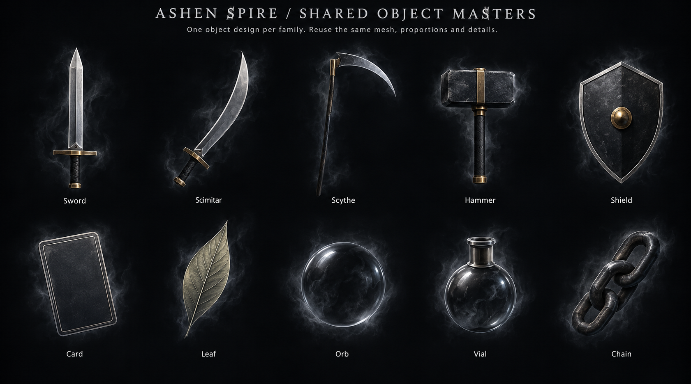
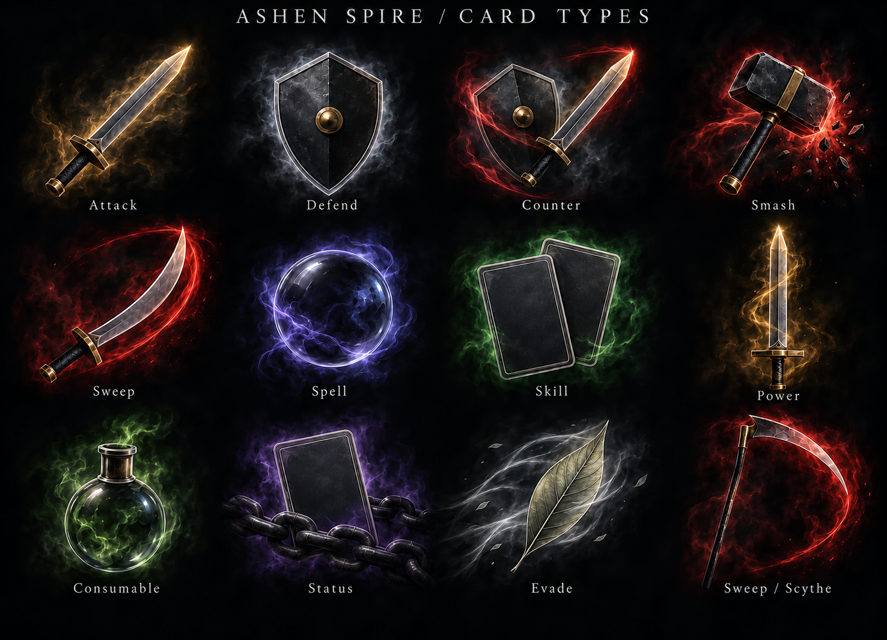
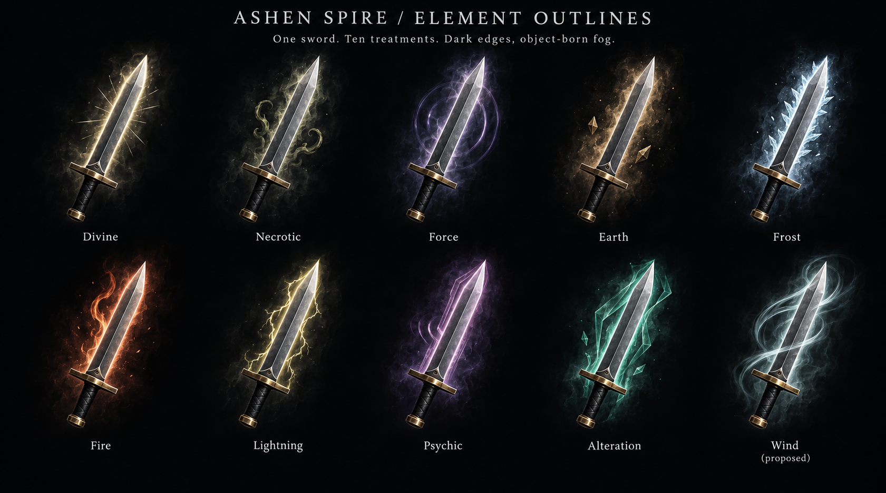
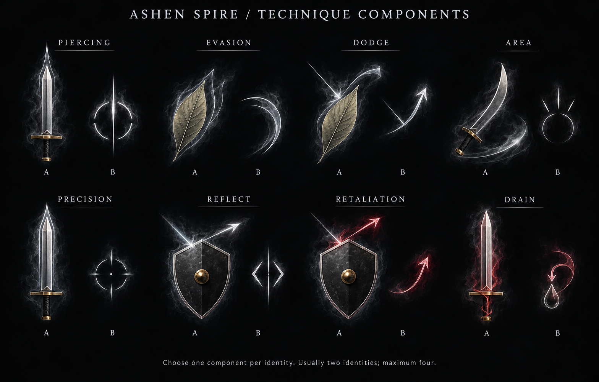
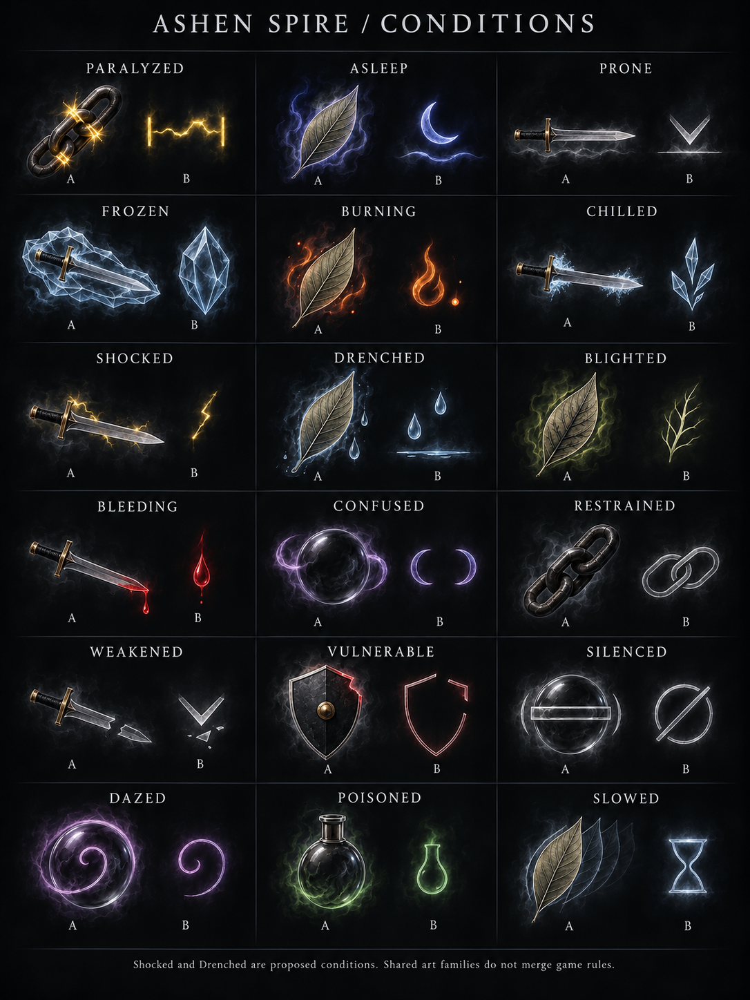
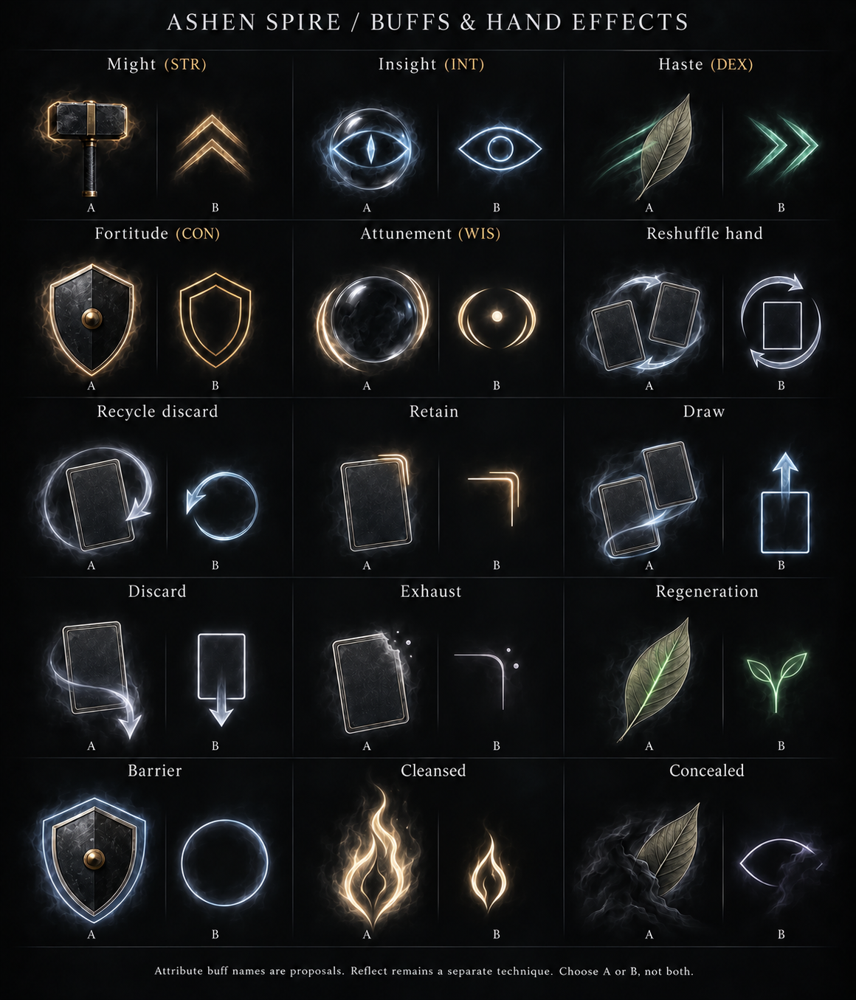

ASHEN SPIRE / FEATURE/NEWCARDART / ART PROPOSAL 02
Shared objects. Dark edges.
Light that leaves the surface.
Reuse one master for each object family. Change its angle, lighting and effect layers while preserving its shape and details. Let a fine broken rim dissolve into fog, with nearly black edges and a clear central silhouette.
Usually two identities, at most four. One or two central objects. For each secondary effect, choose its contour treatment or compact mark.
Shared object masters

These establish a shared visual family. Production must reuse the same asset or mesh IDs; generated concept boards are not a guarantee of pixel-identical objects.
Card types

Dark action palettes remain visible near the center. Counter reuses the same sword and shield. Sweep has an explicit scimitar/scythe choice. Draw reuses two copies of the same card; Evade now uses the leaf.
Element treatments

Divine, Necrotic, Force, Earth, Frost, Fire, Lightning, Psychic, Alteration and proposed Wind. Shape distinguishes the effect as well as color: pressure rings, ice edges, electrical filaments or streamlined ribbons.
Techniques: two component alternatives

A: contour treatment attached to an object. B: compact mark. Choose one per identity. Evasion is a benefit; Dodge is an action. Area is the general term, while Cleave suits a weapon sweep.
Conditions

Keep Chilled distinct from Frozen, and Dazed distinct from Confused. Shocked and Drenched are proposed conditions. Shared visual families do not merge mechanically different status IDs.
Buff and hand-effect vocabulary
MightSTR · Empowered
InsightINT · Enlightened
HasteDEX · Quickened
FortitudeCON · Fortified
AttunementWIS · Attuned

The attribute buffs are naming proposals. Reflect remains a separate mechanic. Reshuffle hand still needs a gameplay definition; it is not silently mapped to the existing recycle-discard operation.